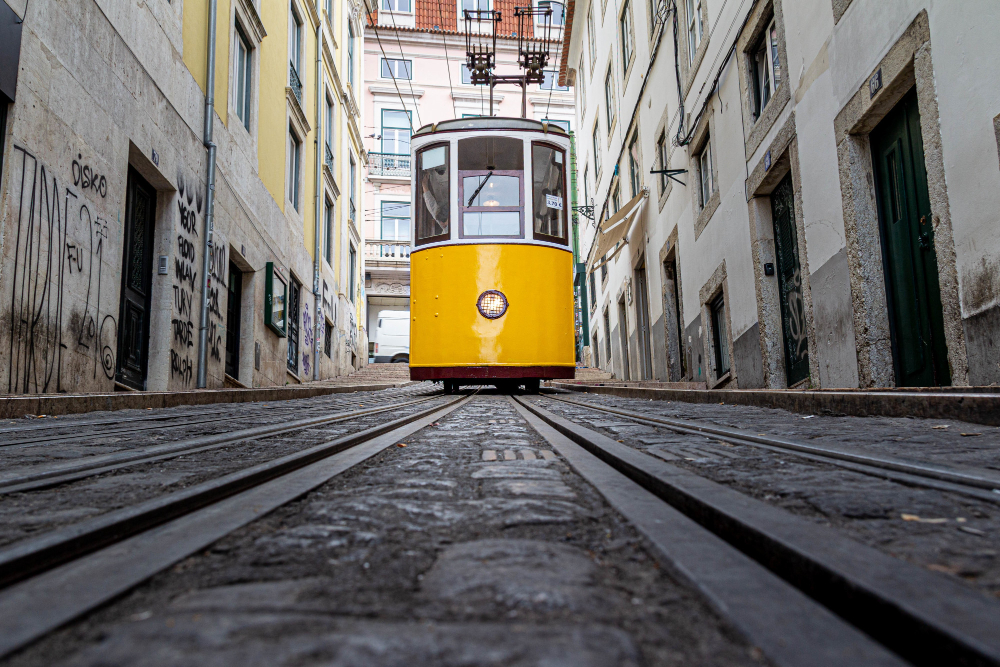
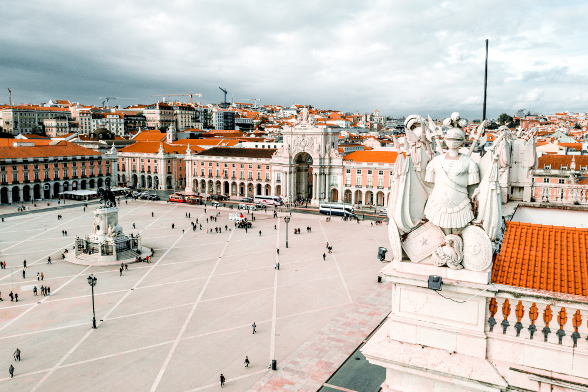
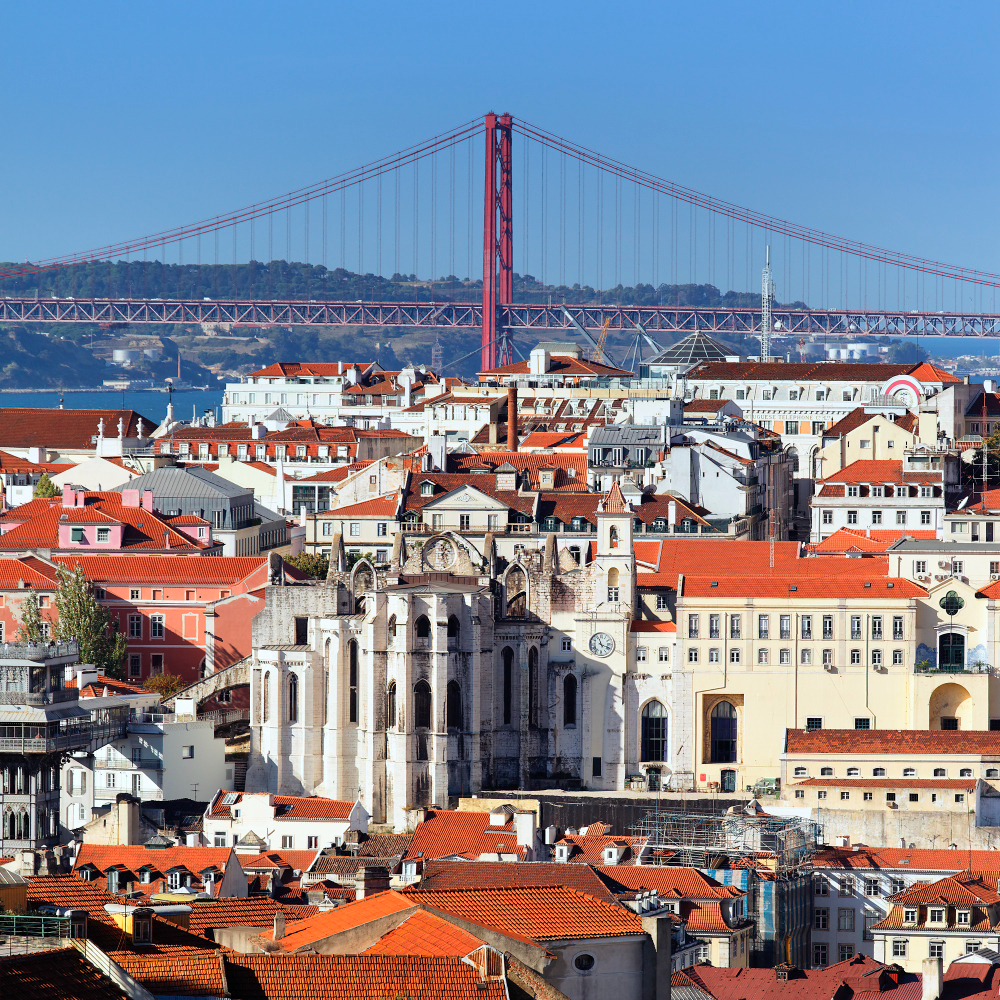
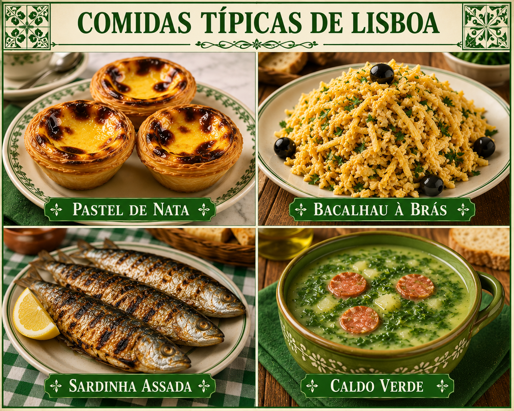

Lisboa
A cidade das sete colinas

Lisboa é a capital de Portugal e uma das cidades mais antigas e visitadas da Europa. Conhecida pelas suas sete colinas, monumentos históricos, gastronomia típica e belas paisagens junto ao rio Tejo, a cidade oferece uma experiência cultural única para turistas de todo o mundo.
Vamos conhecer mais sobre Lisboa?
História
Origem da Cidade
Lisboa é uma das cidades mais antigas da Europa, com mais de 3.000 anos de história. Ao longo do tempo, foi ocupada por diferentes povos, como os fenícios, romanos, mouros e cristãos, que deixaram importantes marcas culturais, arquitectónicas e históricas na cidade.
Influência Portuguesa
Lisboa teve um papel fundamental durante a Era dos Descobrimentos, nos séculos XV e XVI, tornando-se um grande centro de comércio marítimo e exploração. Muitos navegadores portugueses partiram de Lisboa em viagens que ajudaram a expandir o conhecimento do mundo e o império português. Em 1755, a cidade sofreu um grande terramoto que destruiu grande parte das construções. Após a tragédia, Lisboa foi reconstruída sob a liderança do Marquês de Pombal, dando origem à Baixa Pombalina, conhecida pelas suas ruas largas e organização moderna para a época.

Bairros
Lisboa possui vários bairros históricos e modernos, cada um com características próprias. Entre os mais conhecidos estão Alfama, com suas ruas antigas e tradicionais; Bairro Alto, famoso pela vida noturna; Chiado, conhecido pela cultura e comércio; Belém, marcado pelos monumentos históricos; e Baixa, centro da cidade reconstruído após o terramoto de 1755. Esses bairros tornam Lisboa uma cidade rica em cultura, história e diversidade.
Dados Geográficos
Lisboa possui uma área de 100,05 km² e apresenta um clima mediterrânico, caracterizado por verões quentes e invernos suaves.
Dados Demográficos
Abaixo temos alguns dados importantes sobre a cidade de Lisboa, incluindo a sua área territorial, número de habitantes, densidade populacional e quantidade de freguesias. Essas informações ajudam a compreender melhor a dimensão, organização e características demográficas da capital portuguesa.
| Cidade Lisboa | |
|---|---|
| Área | 100,05 km² |
| População | 506 892 hab. |
| Densidade populacional | 5 066,4 hab./km² |
| N.º de freguesias | 24 |
Locais Turísticos
Lisboa é uma cidade rica em história, cultura e monumentos famosos, oferecendo diversas atrações para visitantes de todo o mundo. Entre os principais pontos turísticos estão a Torre de Belém, símbolo das grandes navegações portuguesas, o Mosteiro dos Jerónimos, conhecido pela sua arquitetura manuelina, e o Castelo de São Jorge, que proporciona uma vista panorâmica sobre a cidade. Além dos monumentos históricos, Lisboa possui bairros tradicionais e modernos que mostram diferentes estilos e ambientes da capital portuguesa.
Bairros Históricos
- Alfama — bairro mais antigo de Lisboa, famoso pelas ruas estreitas e pelo fado.
- Bairro Alto — conhecido pela vida noturna, restaurantes e ambiente cultural.
- Baixa e Rossio — centro histórico e comercial da cidade.
- Mouraria — bairro multicultural com forte tradição histórica.
- Graça e São Vicente — regiões com miradouros e paisagens tradicionais.
- Príncipe Real — bairro elegante com jardins, lojas e cafés.
- Alcântara — área moderna com espaços culturais e vida noturna.
- Cais do Sodré — famoso pelos bares, restaurantes e pela proximidade ao rio Tejo.
- Avenida da Liberdade — avenida luxuosa com hotéis, teatros e lojas.
- Parque das Nações — zona moderna construída para a Expo 98, com arquitetura contemporânea e espaços de lazer.

Locais de Interesse
- MAAT — Museu de Arte, Arquitetura e Tecnologia
- Panteão Nacional
- Miradouro da Senhora do Monte
- LX Factory
- Arco da Rua Augusta
- Palácio da Ajuda
- Jardim da Estrela
- Time Out Market Lisboa
- Convento do Carmo
- Museu Nacional do Azulejo
Curiosidades de A a Z
- Alfama é o bairro mais antigo de Lisboa.
- Belém abriga alguns dos monumentos mais famosos da cidade.
- O Castelo de São Jorge oferece uma vista panorâmica de Lisboa.
- Lisboa possui uma grande tradição nos doces portugueses.
- O Elevador de Santa Justa é um dos cartões-postais da cidade.
- O fado nasceu nos bairros históricos lisboetas.
- A gastronomia lisboeta é famosa pelos pratos com bacalhau.
- Muitos hotéis históricos funcionam em antigos palácios.
- Lisboa recebe milhões de turistas internacionais todos os anos.
- O Jardim da Estrela é um dos jardins mais conhecidos da cidade.
- Lisboa possui espaços modernos dedicados à tecnologia e inovação.
- Lisboa é considerada uma das cidades mais ensolaradas da Europa.
- O Mosteiro dos Jerónimos é Património Mundial da UNESCO.
- O Parque das Nações foi criado para a Expo 98.
- O Oceanário de Lisboa é um dos maiores aquários da Europa.
- A Ponte 25 de Abril atravessa o rio Tejo.
- Algumas praças de Lisboa possuem pisos decorados com calçada portuguesa.
- O rio Tejo é um dos símbolos naturais da cidade.
- Lisboa possui mais de 20 miradouros espalhados pela cidade.
- A Torre de Belém foi construída no século XVI.
- Lisboa une tradição histórica e arquitetura moderna.
- Os elétricos amarelos são um dos transportes mais famosos da cidade.
- Lisboa recebe visitantes de várias partes do mundo durante todo o ano.
- A LX Factory é um dos espaços culturais modernos mais conhecidos.
- Jovens artistas utilizam Lisboa como centro de arte urbana e criatividade.
- As zonas históricas de Lisboa preservam construções centenárias.
Cultura
Lisboa possui uma cultura rica e diversificada, construída ao longo de séculos de história e influências de diferentes povos. A cidade é conhecida pela forte tradição do fado, estilo musical típico português que expressa sentimentos, saudade e emoção, sendo considerado um dos maiores símbolos culturais de Portugal.
Arquitetura
A arquitetura lisboeta também faz parte da identidade cultural da cidade, destacando-se pelos azulejos coloridos, monumentos históricos, igrejas, praças e bairros tradicionais. Lisboa combina construções antigas com espaços modernos, criando uma mistura única entre tradição e modernidade.

Eventos
A cidade realiza diversos festivais, eventos culturais, exposições, concertos e festas populares ao longo do ano, especialmente as Festas de Santo António, muito celebradas em junho. Dentre muitos eventos que podemos aproveitar em Lisboa estão:
-
Festival dos Santos Populares
Evento tradicional com música, sardinhas assadas e festas nas ruas de Lisboa.
-
Web Summit
Um dos maiores eventos de tecnologia e inovação do mundo acontece em Lisboa.
-
Maratona de Lisboa
Corrida internacional que atrai atletas de vários países.
-
Festival de Fado
Evento cultural dedicado ao famoso estilo musical português.
Lisboa também é reconhecida pelos seus museus, teatros, miradouros e espaços culturais, tornando-se um importante centro artístico e turístico de Portugal.
Gastronomia
A gastronomia de Lisboa, é famosa por seus pratos tradicionais, como o bacalhau à brás e os pastéis de nata. A capital de Portugal também é conhecida pela sua culinária rica em frutos do mar, doces tradicionais e receitas históricas apreciadas por turistas do mundo inteiro.
Comidas Típicas
- Pastel de Nata
- Doce tradicional português feito com massa folhada e creme de ovos.
- Bacalhau à Brás
- Prato típico preparado com bacalhau desfiado, batatas palha e ovos.
- Sardinha Assada
- Muito consumida durante as festas populares de Lisboa em Junho.
- Caldo Verde
- Sopa tradicional portuguesa feita com couve, batata e chouriço.

Descubra Lisboa
Lisboa é uma cidade rica em história, cultura e beleza, oferecendo uma
experiência única para visitantes de todo o mundo. Com seus bairros
encantadores, locais turísticos fascinantes e uma gastronomia deliciosa,
Lisboa é um destino imperdível para quem deseja conhecer o melhor de Portugal.
Saiba mais sobre Lisboa com a Wikipedia e planeie a sua próxima viagem para esta cidade incrível!
Multimédia
Vídeo — Top 10 Lugares Imperdíveis para conhecer em Lisboa
Vídeo — LISBOA: Roteiro de viagem de 3 a 5 dias!
Áudio — Fado, a Alma de Lisboa
O Fado é o género musical mais representativo de Lisboa. Escute:
"Tic Tac Fado Instrumental" — música tradicional portuguesa (5 min 35 s) — Saber mais sobre o Fado
Mapa de Lisboa
Explore Lisboa no mapa interativo:
Galeria
Imagens da cidade de Lisboa: